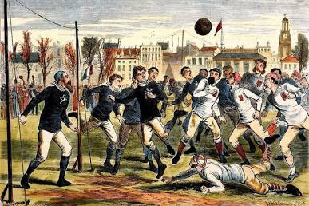
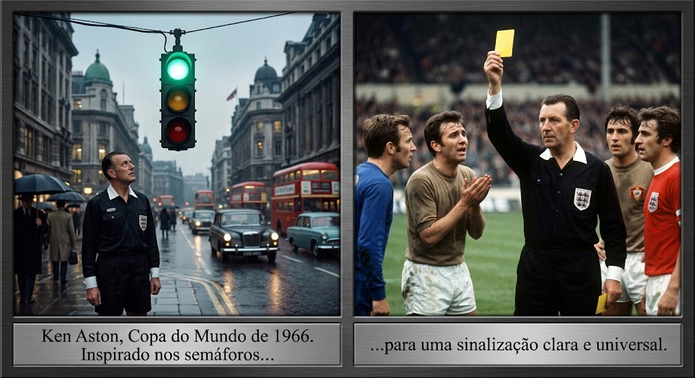
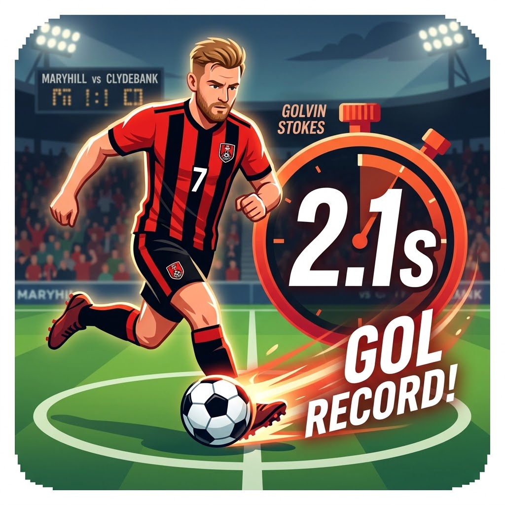

Meu primeiro post
Por: Kaua Machry
Boas-vindas ao meu portal de noticias!Aqui eu vou compartilhar tudo o que acontece e o que esta acontecendo no mundo do futebol.
vou compartilhar tudo sobre futebol e o que esta acontecendo
Por: Kaua Machry
Boas-vindas ao meu portal de noticias!Aqui eu vou compartilhar tudo o que acontece e o que esta acontecendo no mundo do futebol.

Por: Kaua Machry
O futebol surgiu em 26 de outubro de 1863, na inglaterra, com fundação da Football Association (Associação de Futebol da Inglaterra), que pradonizou as regras oficiais do esporte.

Por: Ken Aston
O árbitro inglês Ken Aston teve a ideia durante a Copa do Mundo de 1966, ao ficar parado em um sinal de trânsito. Ele buscava uma forma clara e universal de sinalizar punições a jogadores que falavam idiomas diferentes.

Por: Ken Aston
Foi marcado por Gavin Stokes em apenas 2,1 segundos, pelo Maryhill FC na escócia, em 2017. Ele chutou a bola direto do círculo central logo após o apito inicial.